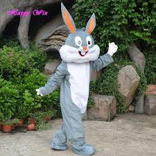

GEORGETOWN GRATITUDE
Gratitude is mascot of georgetowm city for Volley Ball team.
Gratitude represents rabbit which will be in white or brown.
Gratitude is the mascot created by REETHU GOPIREDDY.
Some fun facts about mascot rabbit
Most rabbits have a “sweet tooth” and are crazy about fruit! But just like any other treat, moderation is key!
When a rabbit is feeling submissive he will make himself appear as small as possible by crouching down.
Rabbits love to play and require mental stimulation just like dogs and cats.
Rabbits need large cages or exercise pens kept indoors for health, safety and socialization purposes!

Link to Index